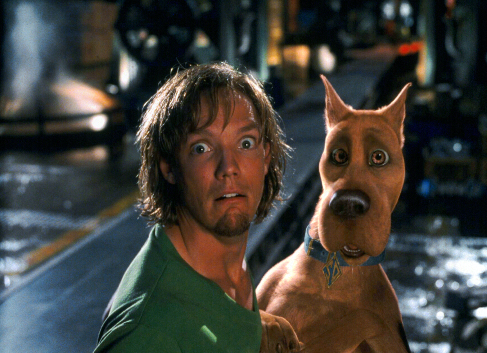
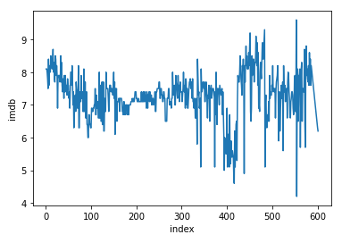
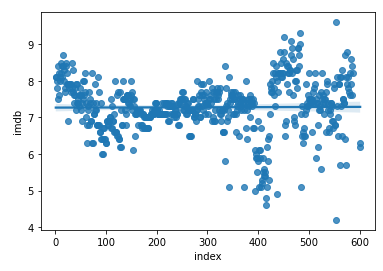
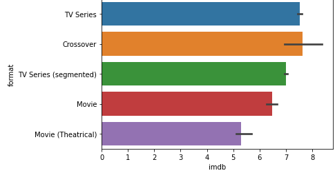
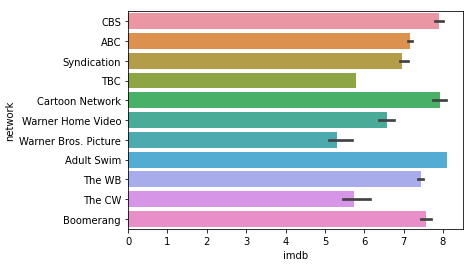
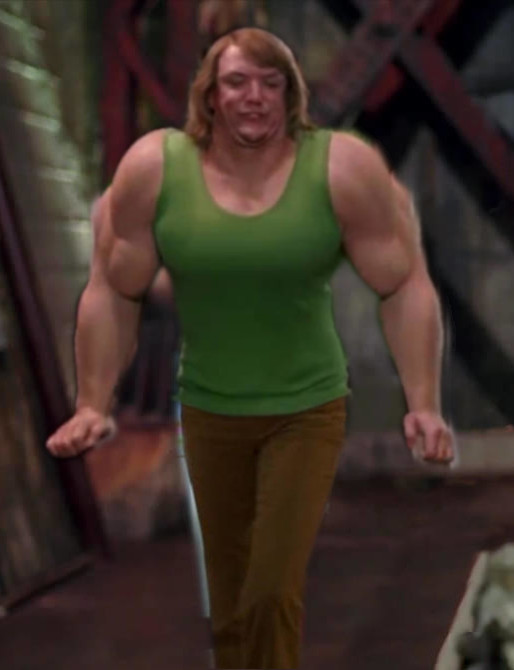

SCOOBY DOO PROJECT
In 1969 Warner Brothers first released the series “Scooby Doo” and quickly achieved great success. This success was mainly for the characters and their archetypes. The show has been around for over 50 years and there have been many movies, tv shows, crossovers, and other productions that have been successful. Warner Brothers has made many popular movies and shows, but should Warner Brothers return to a classic?
Should Warner Brothers produce a new Scooby Doo movie, tv show, or crossover based on previous productions imdb score?
Dataset: Using the csv files found in the “Scooby-Doo Complete” dataset in kaggle. I was able to find the index(date aired), series name, network, format, and imdb score. I had to remove
A ton of unnecessary data such as, if “jinkis” was said in the episode/movie, it also included voice actors, directors, extra characters, and data on the culprit. The database is of every scooby doo movie and episode. This data set is also in chronological order.


The above graphs show the imdb score and time. Since the data is in chronological order we can use the index of the values to demonstrate time. The average imdb score of all of Scooby Doo is 7.278, this is a relatively good score. From index 0 to 300 the score is relatively similar; this is from 1969 to early 2007. After 2007, the scores of the next releases are not very similar and go from a high to low score. The franchise has the highest and lowest rated production in the span of a month. The highest imdb score was 9.6 with the movie Scoobynatural in March 2018 and the lowest score of 4.2 with Daphne and Velma in May 2018. Then there was a large downturn in the score, meaning that the show's popularity was becoming less and less.
With the trends shown above it would probably be in the best interest of Warner Brothers to note pursue the franchise further. What if they did want to make something new, what would be the way to release the production.


The best format for a new release would look to be a crossover, but the range of imdb score for a crossover is larger. This means that a crossover could do really well or really bad. The second best is a tv series that has a lower average than a crossover but does have as great of a range. This means that the imdb scores will be closer to the average than the crossover, so a tv series would be more likely to have a higher score.
Threat to validity: Warner bros has released some newer titles in the franchise and two of them were not included in the dataset. There might have been some null values but I made sure to check and remove them all. Warner bros also has ties with other companies such as DC that can make more money and be more popular than Scooby doo.
